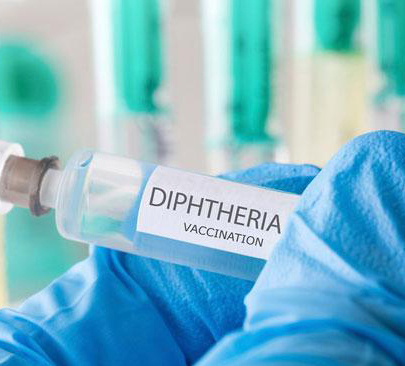
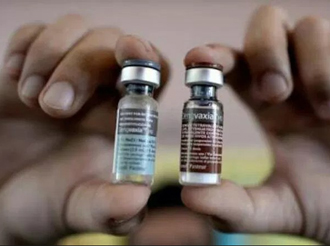

1. Ketahui jadwal imunisasi. Apabila anda ragu, berkonsultasilah dengan dokter anak mengenai jadwal dan interval pemberian vaksin yang tepat.
2. Pastikan kondisi anak optimal untuk menerima vaksin. Ada beberapa kondisi yang menjadi perhatian, di antaranya reaksi alergi berat terhadap komponen vaksin, kelainan sistem kekebalan tubuh, atau sedang menderita sakit berat.
3. Pastikan keaslian vaksin. Hal ini dapat dilakukan dengan memberikan imunisasi di lokasi layanan kesehatan yang Anda percaya dan jangan lupa melihat kondisi vaksin, nomor lot, dan tanggal kadaluarsa vaksin.
4. Tanyakan efek samping yang mungkin muncul. Beberapa vaksin dapat memberikan efek samping seperti demam atau bengkak di lokasi penyuntikan. Penjelasan tentang efek tersebut dan penanganannya dapat ditanyakan kepada dokter anak.
5. Catat pemberian imunisasi di buku kesehatan anak. Mendokumentasikan vaksin apa saja yang telah diterima oleh anak sangat penting, juga dapat menjadi syarat untuk bepergian ke luar negeri.


Tips Membedakan Vaksin Asli dan Vaksin Palsu
Ciri vaksin palsu:
- Harga jual lebih murah
- Dijual bebas
- Tidak ada tanda dot merah
- Bentuk kemasan lebih kasar
- Nomor batch tidak terbaca
- Warna rubber stopper (tutup vial) berbeda dari produk asli
- Tidak ada nomor izin edar (NIE) Badan Pengawas Obat dan Makanan (BPOM)
- Terdapat perbedaan pada cetakan barcode kemasan vaksin palsu
Ciri vaksin asli:
- Kemasan masih disegel
- Terdapat label yang mencantumkan keterangan seputar vaksin pada ampul
- Label ampul biasanya dilepas dan ditempelkan pada buku kesehatan begitu vaksinasi, lalu kemasan dihancurkan